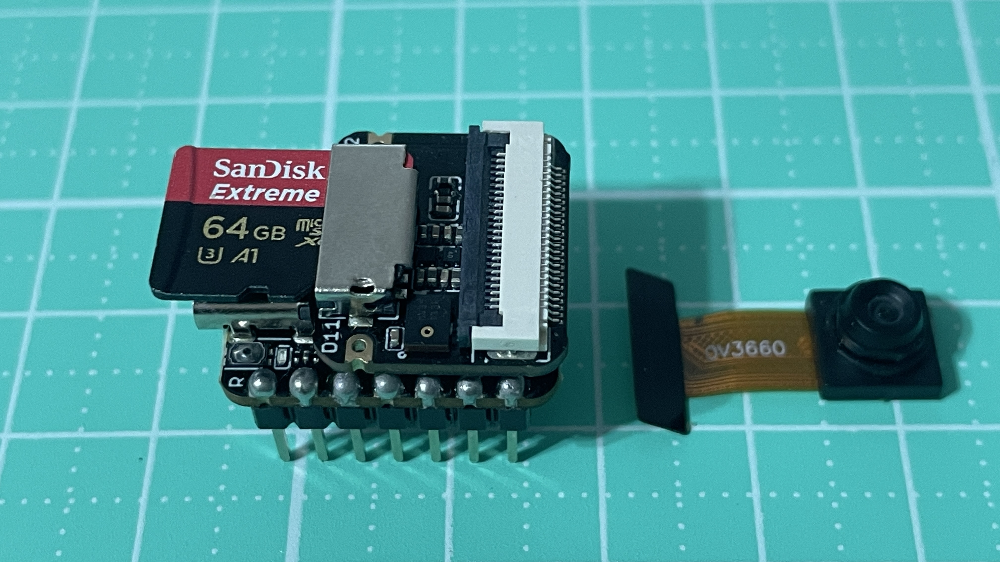

正面圖

圖片來源：
Seeed Studio 官方文件
腳位圖
.jpg)
圖片來源：
Seeed Studio 官方文件
MicroSD安裝圖

在開始撰寫程式之前，先來認識這塊開發板上的 B2B-Connector。

MicroSd.py
import machine
import os
import sdcard
import uos
# MicroSD格式化Fat32，32G以上用guiformat來做格式化。
# =====================================================
# SD 卡硬體腳位設定（Seeed Studio XIAO ESP32S3 Sense）
# =====================================================
# SCK -> GPIO 7 （SPI 時脈）
SCK_PIN = 7
# MOSI -> GPIO 9 （主機送資料）
MOSI_PIN = 9
# MISO -> GPIO 8 （主機收資料）
MISO_PIN = 8
# CS -> GPIO 3 （MicroSD 卡片預設 21）
CS_PIN = 21
# MicroSD 卡掛載點（掛載後 /sd 就是 MicroSD 卡根目錄）
MOUNT_POINT = "/sd"
# =====================================================
# 初始化並掛載 MicroSD 卡
# =====================================================
def sd_mount():
"""
初始化 SPI，並將 MicroSD 卡掛載到 /sd
"""
# 建立 SPI 物件（使用 SPI(2)）
spi = machine.SPI(
2,
baudrate=10_000_000, # SPI 速度，10MHz（可視穩定度調低）
polarity=0,
phase=0,
sck=machine.Pin(SCK_PIN),
mosi=machine.Pin(MOSI_PIN),
miso=machine.Pin(MISO_PIN)
)
# MicroSD 卡 CS 腳位
cs = machine.Pin(CS_PIN, machine.Pin.OUT)
# 初始化 MicroSD 卡（SPI 模式）
sd = sdcard.SDCard(spi, cs)
# 使用 FAT 檔案系統
vfs = uos.VfsFat(sd)
# 掛載到 /sd
uos.mount(vfs, MOUNT_POINT)
print("✅ MicroSD 卡掛載成功（/sd）")
# =====================================================
# 顯示 MicroSD 卡容量資訊
# =====================================================
def sd_show_capacity():
"""
顯示 MicroSD 卡總容量與剩餘容量
"""
stat = uos.statvfs(MOUNT_POINT)
# statvfs 回傳的結構：
# stat[0] -> block size（每個區塊大小，byte）
block_size = stat[0]
# stat[2] -> 總區塊數
total_bytes = stat[0] * stat[2]
# stat[3] -> 可用區塊數
free_bytes = stat[0] * stat[3]
print("📦 MicroSD 卡總容量: {:.2f} MB".format(total_bytes / 1024 / 1024))
print("📦 MicroSD 卡剩餘容量: {:.2f} MB".format(free_bytes / 1024 / 1024))
# =====================================================
# 列出指定目錄內容（預設列出 MicroSD 根目錄）
# =====================================================
def sd_list(path=MOUNT_POINT):
"""
列出指定路徑的檔案與資料夾
"""
print("📁 目錄內容:", os.listdir(path))
# =====================================================
# 寫入檔案
# =====================================================
def sd_write(filename, content):
"""
在 MicroSD 卡中寫入文字檔
"""
path = MOUNT_POINT + "/" + filename
with open(path, "w") as f:
f.write(content)
print("✍️ 檔案寫入完成:", filename)
# =====================================================
# 讀取檔案
# =====================================================
def sd_read(filename):
"""
讀取 MicroSD 卡中的檔案內容
"""
path = MOUNT_POINT + "/" + filename
with open(path, "r") as f:
data = f.read()
print("📖 讀取內容：")
print(data)
return data
# =====================================================
# 刪除檔案
# =====================================================
def sd_delete(filename):
"""
刪除 MicroSD 卡中的檔案
"""
path = MOUNT_POINT + "/" + filename
os.remove(path)
print("🗑 已刪除檔案:", filename)
# =====================================================
# 主程式測試流程
# =====================================================
try:
# 掛載 MicroSD 卡
sd_mount()
# 顯示MicroSD容量
sd_show_capacity()
# 列出MicroSD根目錄
sd_list()
# 寫入測試檔案
sd_write("hello.txt", "Hello from Seeed Studio XIAO ESP32S3 Sense!\n")
# 讀取檔案
sd_read("hello.txt")
# 刪除檔案
#sd_delete("hello.txt")
# 再列一次目錄確認
#sd_list()
except Exception as e:
print("❌ MicroSD 卡操作錯誤:", e)
sdcard.py
# 檔案來源：https://github.com/micropython/micropython-lib/blob/master/micropython/drivers/storage/sdcard/sdcard.py
"""
使用 SPI 介面操作 SD 卡的 MicroPython 驅動程式
需求：
- 一組 SPI 匯流排
- 一個 CS（Chip Select）腳位
此類別提供 readblocks 與 writeblocks 方法
讓 SD 卡可以被掛載成檔案系統
------------------------------------------------
使用範例（pyboard）：
import pyb, sdcard, os
sd = sdcard.SDCard(pyb.SPI(1), pyb.Pin.board.X5)
pyb.mount(sd, '/sd2')
os.listdir('/')
------------------------------------------------
使用範例（ESP8266 / ESP32）：
import machine, sdcard, os
sd = sdcard.SDCard(machine.SPI(1), machine.Pin(15))
os.mount(sd, '/sd')
os.listdir('/sd')
"""
from micropython import const
import time
_CMD_TIMEOUT = const(100)
_R1_IDLE_STATE = const(1 << 0)
# R1_ERASE_RESET = const(1 << 1)
_R1_ILLEGAL_COMMAND = const(1 << 2)
# R1_COM_CRC_ERROR = const(1 << 3)
# R1_ERASE_SEQUENCE_ERROR = const(1 << 4)
# R1_ADDRESS_ERROR = const(1 << 5)
# R1_PARAMETER_ERROR = const(1 << 6)
_TOKEN_CMD25 = const(0xFC)
_TOKEN_STOP_TRAN = const(0xFD)
_TOKEN_DATA = const(0xFE)
class SDCard:
def __init__(self, spi, cs, baudrate=1320000):
self.spi = spi
self.cs = cs
self.cmdbuf = bytearray(6)
self.dummybuf = bytearray(512)
self.tokenbuf = bytearray(1)
for i in range(512):
self.dummybuf[i] = 0xFF
self.dummybuf_memoryview = memoryview(self.dummybuf)
# initialise the card
self.init_card(baudrate)
def init_spi(self, baudrate):
try:
master = self.spi.MASTER
except AttributeError:
# on ESP8266
self.spi.init(baudrate=baudrate, phase=0, polarity=0)
else:
# on pyboard
self.spi.init(master, baudrate=baudrate, phase=0, polarity=0)
def init_card(self, baudrate):
# init CS pin
self.cs.init(self.cs.OUT, value=1)
# init SPI bus; use low data rate for initialisation
self.init_spi(100000)
# clock card at least 100 cycles with cs high
for i in range(16):
self.spi.write(b"\xff")
# CMD0: init card; should return _R1_IDLE_STATE (allow 5 attempts)
for _ in range(5):
if self.cmd(0, 0, 0x95) == _R1_IDLE_STATE:
break
else:
raise OSError("no SD card")
# CMD8: determine card version
r = self.cmd(8, 0x01AA, 0x87, 4)
if r == _R1_IDLE_STATE:
self.init_card_v2()
elif r == (_R1_IDLE_STATE | _R1_ILLEGAL_COMMAND):
self.init_card_v1()
else:
raise OSError("couldn't determine SD card version")
# get the number of sectors
# CMD9: response R2 (R1 byte + 16-byte block read)
if self.cmd(9, 0, 0, 0, False) != 0:
raise OSError("no response from SD card")
csd = bytearray(16)
self.readinto(csd)
if csd[0] & 0xC0 == 0x40: # CSD version 2.0
self.sectors = ((csd[7] << 16 | csd[8] << 8 | csd[9]) + 1) * 1024
elif csd[0] & 0xC0 == 0x00: # CSD version 1.0 (old, <=2GB)
c_size = (csd[6] & 0b11) << 10 | csd[7] << 2 | csd[8] >> 6
c_size_mult = (csd[9] & 0b11) << 1 | csd[10] >> 7
read_bl_len = csd[5] & 0b1111
capacity = (c_size + 1) * (2 ** (c_size_mult + 2)) * (2**read_bl_len)
self.sectors = capacity // 512
else:
raise OSError("SD card CSD format not supported")
# print('sectors', self.sectors)
# CMD16: set block length to 512 bytes
if self.cmd(16, 512, 0) != 0:
raise OSError("can't set 512 block size")
# set to high data rate now that it's initialised
self.init_spi(baudrate)
def init_card_v1(self):
for i in range(_CMD_TIMEOUT):
time.sleep_ms(50)
self.cmd(55, 0, 0)
if self.cmd(41, 0, 0) == 0:
# SDSC card, uses byte addressing in read/write/erase commands
self.cdv = 512
# print("[SDCard] v1 card")
return
raise OSError("timeout waiting for v1 card")
def init_card_v2(self):
for i in range(_CMD_TIMEOUT):
time.sleep_ms(50)
self.cmd(58, 0, 0, 4)
self.cmd(55, 0, 0)
if self.cmd(41, 0x40000000, 0) == 0:
self.cmd(58, 0, 0, -4) # 4-byte response, negative means keep the first byte
ocr = self.tokenbuf[0] # get first byte of response, which is OCR
if not ocr & 0x40:
# SDSC card, uses byte addressing in read/write/erase commands
self.cdv = 512
else:
# SDHC/SDXC card, uses block addressing in read/write/erase commands
self.cdv = 1
# print("[SDCard] v2 card")
return
raise OSError("timeout waiting for v2 card")
def cmd(self, cmd, arg, crc, final=0, release=True, skip1=False):
self.cs(0)
# create and send the command
buf = self.cmdbuf
buf[0] = 0x40 | cmd
buf[1] = arg >> 24
buf[2] = arg >> 16
buf[3] = arg >> 8
buf[4] = arg
buf[5] = crc
self.spi.write(buf)
if skip1:
self.spi.readinto(self.tokenbuf, 0xFF)
# wait for the response (response[7] == 0)
for i in range(_CMD_TIMEOUT):
self.spi.readinto(self.tokenbuf, 0xFF)
response = self.tokenbuf[0]
if not (response & 0x80):
# this could be a big-endian integer that we are getting here
# if final<0 then store the first byte to tokenbuf and discard the rest
if final < 0:
self.spi.readinto(self.tokenbuf, 0xFF)
final = -1 - final
for j in range(final):
self.spi.write(b"\xff")
if release:
self.cs(1)
self.spi.write(b"\xff")
return response
# timeout
self.cs(1)
self.spi.write(b"\xff")
return -1
def readinto(self, buf):
self.cs(0)
# read until start byte (0xff)
for i in range(_CMD_TIMEOUT):
self.spi.readinto(self.tokenbuf, 0xFF)
if self.tokenbuf[0] == _TOKEN_DATA:
break
time.sleep_ms(1)
else:
self.cs(1)
raise OSError("timeout waiting for response")
# read data
mv = self.dummybuf_memoryview
if len(buf) != len(mv):
mv = mv[: len(buf)]
self.spi.write_readinto(mv, buf)
# read checksum
self.spi.write(b"\xff")
self.spi.write(b"\xff")
self.cs(1)
self.spi.write(b"\xff")
def write(self, token, buf):
self.cs(0)
# send: start of block, data, checksum
self.spi.read(1, token)
self.spi.write(buf)
self.spi.write(b"\xff")
self.spi.write(b"\xff")
# check the response
if (self.spi.read(1, 0xFF)[0] & 0x1F) != 0x05:
self.cs(1)
self.spi.write(b"\xff")
return
# wait for write to finish
while self.spi.read(1, 0xFF)[0] == 0:
pass
self.cs(1)
self.spi.write(b"\xff")
def write_token(self, token):
self.cs(0)
self.spi.read(1, token)
self.spi.write(b"\xff")
# wait for write to finish
while self.spi.read(1, 0xFF)[0] == 0x00:
pass
self.cs(1)
self.spi.write(b"\xff")
def readblocks(self, block_num, buf):
# workaround for shared bus, required for (at least) some Kingston
# devices, ensure MOSI is high before starting transaction
self.spi.write(b"\xff")
nblocks = len(buf) // 512
assert nblocks and not len(buf) % 512, "Buffer length is invalid"
if nblocks == 1:
# CMD17: set read address for single block
if self.cmd(17, block_num * self.cdv, 0, release=False) != 0:
# release the card
self.cs(1)
raise OSError(5) # EIO
# receive the data and release card
self.readinto(buf)
else:
# CMD18: set read address for multiple blocks
if self.cmd(18, block_num * self.cdv, 0, release=False) != 0:
# release the card
self.cs(1)
raise OSError(5) # EIO
offset = 0
mv = memoryview(buf)
while nblocks:
# receive the data and release card
self.readinto(mv[offset : offset + 512])
offset += 512
nblocks -= 1
if self.cmd(12, 0, 0xFF, skip1=True):
raise OSError(5) # EIO
def writeblocks(self, block_num, buf):
# workaround for shared bus, required for (at least) some Kingston
# devices, ensure MOSI is high before starting transaction
self.spi.write(b"\xff")
nblocks, err = divmod(len(buf), 512)
assert nblocks and not err, "Buffer length is invalid"
if nblocks == 1:
# CMD24: set write address for single block
if self.cmd(24, block_num * self.cdv, 0) != 0:
raise OSError(5) # EIO
# send the data
self.write(_TOKEN_DATA, buf)
else:
# CMD25: set write address for first block
if self.cmd(25, block_num * self.cdv, 0) != 0:
raise OSError(5) # EIO
# send the data
offset = 0
mv = memoryview(buf)
while nblocks:
self.write(_TOKEN_CMD25, mv[offset : offset + 512])
offset += 512
nblocks -= 1
self.write_token(_TOKEN_STOP_TRAN)
def ioctl(self, op, arg):
if op == 4: # get number of blocks
return self.sectors
if op == 5: # get block size in bytes
return 512